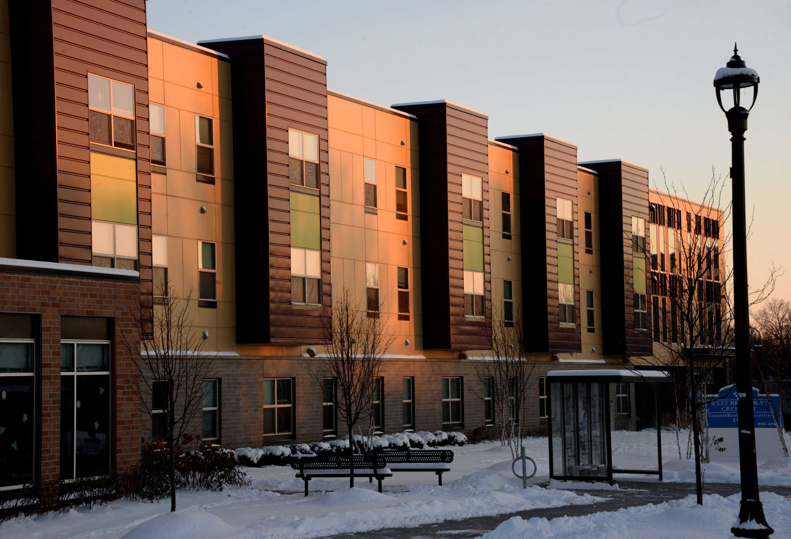

3 Building Energy

There are several strategies that can be employed to reduce emissions in the building energy sector, including improving efficiency, transitioning to low-carbon electricity sources, electrifying heating systems, adopting sustainable construction practices, and changing behaviors to use energy more efficiently.
3.1 Framework
The global energy consumption of buildings, both residential and commercial, has steadily increased and now accounts for between 20-40% of energy consumption in developed countries (Pérez-Lombard, Ortiz, and Pout 2008).
What drives greenhouse gas emissions in the building sector?
To make predictions about the future greenhouse gas emissions from the building energy sector in the city of Minneapolis, we consider three important factors:
The building sector is a major contributor to greenhouse gas emissions, primarily due to energy consumption. However, we have the opportunity to make a positive impact by reducing these emissions through decarbonizing our electricity grid and minimizing the carbon footprint of the natural gas used for heating, with strategies such as renewable natural gas.
Residential energy consumption is proportional to the floor area of homes. In other words, larger homes consume more energy. Strategies aimed at reducing the floor area or increasing the energy efficiency per unit area of residential buildings have the potential to lower emissions. However, it’s important to keep in mind that there are other factors that also contribute to residential energy consumption, such as the type of appliances and systems used, the number of occupants, and the home’s location and climate.
Energy consumption in the non-residential sector is correlated with the number of jobs in the industrial and commercial sectors in a community. Strategies that reduce the energy intensity per worker have the potential to decrease greenhouse gas emissions by increasing energy efficiency. However, there are other factors that also contribute to non-residential energy consumption, such as the type of building, the usage pattern, and the location and climate.
Energy efficiency
There are various energy-efficient building design standards available, such as Passive House standards as well as new LEED performance-based energy efficiency standards. Minnesota’s B3 Buildings Benchmarking project provides a long-term approach to tracking increases in the energy efficiency of existing and new buildings per square foot.
For instance, cities like Minneapolis, St. Paul, St. Louis Park, Edina, and Bloomington have encouraged energy-efficient buildings by adopting policies that require benchmarking for buildings. Building owners in Minneapolis can submit and view data online, and property managers and owners in Edina can view energy use for large buildings through an online map. In the vicinity of Bemidji, MN, the Waldsee BioHaus, a classroom and dormitory, holds the distinction of being the first building in North America certified by Germany’s Passivhaus Institute.
What is the status of the electricity grid?
When it comes to reducing emissions in the building sector, the electricity grid, and the percent that it is supplied by renewable sources plays a major role.
Electricity in Minneapolis is served mostly by Xcel Energy. In their report Building a Carbon Free Future in 2019, the utility states their goal to provide carbon-free electricity to all of its customers by 2050. The company aims to reduce carbon emissions by 80% by 2030 as an interim goal.
New legislation signed by Governor Tim Walz sets a goal of having 100% clean electricity in the state by 2040 (Governor Walz Signs Bill Moving Minnesota to 100 Percent Clean Energy by 2040). However, there are many other factors and strategies that can be considered and implemented for efficiency, reduced demand, and reduced reliance on natural gas.
3.2 Residential Energy
The biggest share of residential energy use is typically for heating and cooling. In the United States, heating and air conditioning account for about half of the average home’s energy use. Therefore, for the residential sector, electricity and natural gas used tend to be closely correlated with the size of a building.
Table 3.1 shows the basic assumptions about electricity and natural gas use for Minneapolis in the baseline year of 2018 and forecast year of 2040.
| Variables | 2018 (Baseline) | 2040 (Busines-as-Usual) |
|---|---|---|
| Residential Electricity (MWh) | 1,029,006 | 954,909 |
| Residential Electricity Emissions (tonnes CO2e) | 378,435 | |
| Residential Natural Gas (Therms) | 120,984,119 | 140,340,271 |
| Residential Natural Gas Emissions (tonnes CO2e) | 643,172 | |
| Residential Electricity per Floor Area (KWh/ft2) | 4.21 | 3.37 |
| Residential Therms per Floor Area (therms/ft2) | 0.49 | 0.49 |
| Residential Electricity per Household (MWh/household) | 5.63 | |
| Residential Therms per Household (therms/household) | 662.13 |
3.2.1 Strategies
Energy consumption depends on many factors including floor area, efficiency and insulation, grid composition, and of course the weather. We have calculated the impact of different strategies that alter each factor that is under human control.
Cities have a range of tools at their disposal to control the size of new single family homes and to encourage the construction of smaller, more efficient homes.
The City of Minneapolis can influence the factors around residential energy use in a variety of ways, including:
Design guidelines: Cities can adopt or develop design guidelines that specify the size and appearance of new single family homes. These guidelines can be used to encourage the construction of smaller or more efficient homes. There are several different energy efficiency building design standards, such as Passive House standards as well as LEED performance-based energy efficiency standards and others that could be used as guidelines for residential buildings.
Zoning regulations: The City of Minneapolis has a range of residential zoning categories, including single-family, multifamily, and mixed-use zones, which are designed to accommodate different types of housing and land uses. The Minneapolis 2040 Comprehensive Plan aimed to increase housing supply and address affordability and segregation issues by eliminating single-family zoning and allowing up to three units per property. A city could also use zoning regulations to specify the size of new single family homes. For example, the city might require that new single family homes have a minimum or maximum square footage, or that they be a certain percentage of the size of the lot on which they are built.
Incentives: a city can offer incentives to encourage particular types of construction or renovation. For example, a city might offer reduced permit fees or other financial incentives to builders who construct homes that meet certain size requirements, or put forward funds for retrofitting existing homes for greater efficiency.
Fees: Cities can impose impact fees on new construction in order to offset the costs of providing infrastructure and other services. Impact fees can be used to discourage the construction of larger homes by imposing higher fees on larger homes.
3.2.1.1 Existing Homes Energy Efficiency
There are multiple ways in which a city, like Minneapolis, can promote the retrofit of existing homes to gain energy efficiency. Some examples include:
Develop education and outreach programs Cities can develop education and outreach programs to inform homeowners about the benefits of energy-efficient home retrofits and how to access available resources and incentives. According to the Center for Energy and Environment (CEEE) the Energy Disclosure Program in Minneapolis aims to increase consumer awareness of energy performance in single-family homes in order to encourage the adoption of energy efficiency improvements. The program has been in place since January 2020 and is a part of the city’s Truth in Sale of Housing (TISH) pre-sale inspection process. It involves gathering data on key energy efficiency attributes such as insulation and heating equipment, and communicating the results to home sellers and buyers in an Energy Disclosure Report. The program is being implemented in partnership with the Center for Energy and Environment and CenterPoint Energy, and this report summarizes findings from the first 30 months of programming.
Offer financial incentives Cities can offer financial incentives, such as rebates or low-interest loans, to encourage homeowners to invest in energy-efficient home retrofits. The City of Minneapolis, offers incentives and rebates for homeowners for replacing less efficient equipment.
Implement energy audits Minneapolis residents might be eligible for program such as the Home Energy Squads which free visits by energy auditors to income qualifying households. Cities can offer energy audits to help homeowners identify areas where their homes are losing energy and recommend cost-effective retrofits.
Partner with local organizations Cities can partner with local organizations, such as non-profits or utility companies, to offer resources and assistance to homeowners interested in energy-efficient retrofits.
3.2.1.1.1 Retrofit 80% of Homes
About this strategy Cities can provide incentives to homeowners to retrofit their properties for energy efficiency. We assume 80% of existing homes with energy use intensity reduced by 33%.
| Variables | 2018 Baseline |
|---|---|
| Number of Single Family Units | 76,494.00 |
| Number of Multifamily Units | 145,653.00 |
| Single Family Average Floor Area (ft2) | 1,043.82 |
| Multifamily Average Floor Area for the County (ft2) | 822.20 |
| Variables | 2018 Baseline | 2040 Business-as-Usual | 2040 Scenario |
|---|---|---|---|
| Residential Electricity (MWh) | 1,029,006 | 954,909 | 672,196 |
| Residential Electricity Emissions (kg CO2e) | 582,829,127 | 540,860,391 | 380,731,673 |
| Residential Natural Gas (Therms) | 120,984,119 | 140,340,271 | 98,790,717 |
| Residential Natural Gas Emissions (kg CO2e) | 642,425,672 | 745,206,837 | 524,578,709 |

3.2.1.1.2 Retrofit Remaining 20% of into Passive Homes
About this strategy Same as previous strategy, except now the remaining 20% of homes are retrofitted to high passive house standards, which results in 66% reduction in energy use intensity (ZeroEnergy Design, 2021).
| Variables | 2018 Baseline |
|---|---|
| Number of Single Family Units | 76,494.00 |
| Number of Multifamily Units | 145,653.00 |
| Single Family Average Floor Area (ft2) | 940.78 |
| Multifamily Average Floor Area for the County (ft2) | 747.67 |
| Variables | 2018 Baseline | 2040 Business-as-Usual | 2040 Scenario |
|---|---|---|---|
| Residential Electricity (MWh) | 1,029,006 | 954,909 | 609,095 |
| Residential Electricity Emissions (kg CO2e) | 582,829,127 | 540,860,391 | 344,991,151 |
| Residential Natural Gas (Therms) | 120,984,119 | 140,340,271 | 89,516,911 |
| Residential Natural Gas Emissions (kg CO2e) | 642,425,672 | 745,206,837 | 475,334,798 |

3.2.1.2 New Single Family Homes Energy Efficiency
New construction can achieve much greater energy efficiency in comparison to existing buildings. There are many green building rating systems available for use, such as Green Communities, Energy Star, DOE Zero Energy Ready Homes, Passive House, LEED, or SB 2030. Cities could implement programs to encourage uptake of these standards.
The amount of energy savings that can be achieved through these guidelines and certifications will depend on the specific design and construction practices that are used, as well as the location and climate of the building.
The Greenhouse Gas Scenario Planning Tool uses LEED Gold for residential buildings as an example of how building standard could reduce energy use and therefore carbon emissions.
LEED (Leadership in Energy and Environmental Design) is a well-known green building rating system that is used to evaluate the sustainability of buildings. Buildings that meet LEED standards are designed and constructed to be energy efficient and to use fewer natural resources. According to the U.S. Green Building Council, buildings that are designed to meet LEED Gold standards typically achieve energy savings of around 25% compared to conventional buildings.
About this strategy We assumed 50% of new single-family homes to be LEED-Gold or equivalent with both electricity and gas energy use intensity reduced 64%.
| Variables | 2018 Baseline | 2040 Scenario |
|---|---|---|
| Number of Single Family Units | 76,935.00 | 76,494.00 |
| Number of Multifamily Units | 123,504.00 | 145,653.00 |
| Single Family Average Floor Area (ft2) | 1,359.56 | 1,563.49 |
| Multifamily Average Floor Area for the County (ft2) | 1,132.31 | 1,125.64 |
| Variables | 2018 Baseline | 2040 Business-as-Usual | 2040 Scenario |
|---|---|---|---|
| Residential Electricity (MWh) | 1,029,006 | 954,909 | 902,374 |
| Residential Electricity Emissions (kg CO2e) | 582,829,127 | 540,860,391 | 511,104,605 |
| Residential Natural Gas (Therms) | 120,984,119 | 140,340,271 | 132,619,359 |
| Residential Natural Gas Emissions (kg CO2e) | 642,425,672 | 745,206,837 | 704,208,798 |

3.2.1.3 Electrification of Residential Heating
Alongside grid changes, switching to more efficient electric options for heating and hot water such as heat pumps and tank-less water heaters can significantly reduce emissions. Only around 14% of homes in MN have currently adopted these new technologies.
The scenario planning model utilizes efficiency of the heat pump derived from pilot tests in Minnesota, so the results are more realistic for our region. Results are preliminary as heat pump efficiency continues to increase.
About this strategy For this strategy, we model the assumption that by 2040 59% of homes are using air-source heat pumps and electric water heaters, instead of using gas for heating. Note that this strategy should preferably be paired with clean electricity strategies to reduce overall emissions.
| Variables | 2018 Baseline | 2040 Business-as-Usual | 2040 Scenario |
|---|---|---|---|
| Residential Electricity (MWh) | 1,029,006 | 954,909 | 3,756,281 |
| Residential Electricity Emissions (kg CO2e) | 582,829,127 | 540,860,391 | 2,127,557,626 |
| Residential Natural Gas (Therms) | 120,984,119 | 140,340,271 | 77,187,149 |
| Residential Natural Gas Emissions (kg CO2e) | 642,425,672 | 745,206,837 | 409,863,760 |

3.2.1.4 Clean Residential Electricity
The electricity grid can become cleaner by increasing the use of renewable energy sources such as solar, wind, and hydroelectric power, which produce significantly fewer greenhouse gas emissions than fossil fuels.
Cities can support uptake of clean electricity by facilitating programs that fund or offer incentives for implementing renewable energy technologies. Residents and property owners can support renewable energy by installing these technologies, including solar panels and heat pumps.
About this strategy: In this example, due to decarbonizing the grid at 80% the emission factor of electricity decreases from 568 kg2e/MWh (2018 Minnesota state level) to 113 kgCO2e/MWh.
| Variables | 2018 Baseline | 2040 Business-as-Usual | 2040 Scenario |
|---|---|---|---|
| Residential Electricity (MWh) | 1,029,006 | 954,909 | 954,909 |
| Residential Electricity Emissions (kg CO2e) | 582,829,127 | 540,860,391 | 108,172,078 |
| Residential Natural Gas (Therms) | 120,984,119 | 140,340,271 | 140,340,271 |
| Residential Natural Gas Emissions (kg CO2e) | 642,425,672 | 745,206,837 | 745,206,837 |

3.2.1.5 Renewable Natural Gas
This report projects that homes not using electricity for space and water heating will switch from natural gas to renewable natural gas.
Renewable natural gas, also known as biogas, consists largely of methane, which can be captured and processed at solid waste landfills and wastewater treatment plants.1 This comes with multiple benefits: it reduces methane emissions that would otherwise be released from landfills and wastewater treatment plants, and it can replace fossil fuel as an energy source. Food waste digestion facilities, which produce renewable natural gas from organic scraps, can also reduce the volume of waste sent to the landfill, which would help to meet the Minnesota Legislature’s goal of recycling a greater portion of solid wastes in the Twin Cities metropolitan area.2
About this strategy Our assumption is that cities can control (or at least influence)…
** LM: Do we want to take this section out of the report for now? **
3.2.1.6 Behavior Change for Residential Energy Efficiency
implementing efficient messaging, in-home energy displays, and smart meters can be an effective way to reduce household energy use, but the actual impact may depend on the specific circumstances of each city and the participation rate of households in these actions.
About this strategy In this example we assume efficient messaging, in-home energy display, and smart meters together reduce household energy use by 11%, with 100% of homes changing behaviors due to these actions.
| Variables | 2018 Baseline | 2040 Scenario |
|---|---|---|
| Number of Single Family Units | 76,935.00 | 76,494.00 |
| Number of Multifamily Units | 123,504.00 | 145,653.00 |
| Single Family Average Floor Area (ft2) | 1,359.56 | 1,391.51 |
| Multifamily Average Floor Area for the County (ft2) | 1,132.31 | 1,001.82 |
| Variables | 2018 Baseline | 2040 Business-as-Usual | 2040 Scenario |
|---|---|---|---|
| Residential Electricity (MWh) | 1,029,006 | 954,909 | 849,869 |
| Residential Electricity Emissions (kg CO2e) | 582,829,127 | 540,860,391 | 481,365,748 |
| Residential Natural Gas (Therms) | 120,984,119 | 140,340,271 | 124,902,841 |
| Residential Natural Gas Emissions (kg CO2e) | 642,425,672 | 745,206,837 | 663,234,085 |

3.2.1.7 Increased Multifamily
Compact community development can reduce building energy use by increasing the proportion of multifamily homes in the housing stock. Multifamily homes have a smaller floor area than single-family homes, which can translate to energy use reductions.
The Metropolitan Council’s Thrive MSP plan projects an increase in the percentage of multifamily housing by 2040. This is consistent with the Minneapolis 2040 plan move to eliminate single-family-only zoning areas.
About this strategy Here, we model that 50% of all new single-family construction will become multifamily, with the multifamily homes having smaller square footage.
| Variables | 2018 Baseline | 2040 Scenario |
|---|---|---|
| Number of Single Family Units | 76,935.00 | 76,426.02 |
| Number of Multifamily Units | 123,504.00 | 145,653.00 |
| Single Family Average Floor Area (ft2) | 1,359.56 | 1,563.49 |
| Multifamily Average Floor Area for the County (ft2) | 1,132.31 | 1,125.64 |
| Variables | 2018 Baseline | 2040 Business-as-Usual | 2040 Scenario |
|---|---|---|---|
| Residential Electricity (MWh) | 1,029,006 | 954,909 | 954,876 |
| Residential Electricity Emissions (kg CO2e) | 582,829,127 | 540,860,391 | 540,841,819 |
| Residential Natural Gas (Therms) | 120,984,119 | 140,340,271 | 140,335,452 |
| Residential Natural Gas Emissions (kg CO2e) | 642,425,672 | 745,206,837 | 745,181,248 |

Affordability co-benefit: With electricity costs projected to nearly double by 2040, smaller floor area is likely to be more affordable for families in all types of housing. However, single-family floor areas in the Twin Cities are increasing. Therefore, the next section also demonstrates the effect of more affordable, smaller floor area, even in new single-family construction, going forward.
3.2.1.8 Reduce Average Single-Family Floor Area Increase
Over time, the single-family home average floor area has been increasing. The floor area of a home is directly correlated with energy use. If the availability of fossil fuel sources such as oil, natural gas, and coal is limited, energy prices may increase as demand outstrips supply. New single-family homeowners may respond to increased energy prices by choosing smaller living spaces in order to save on energy costs, driving market demand to decrease the average floor area of a new single-family home. Cities could also consider methods to influence the size of new single-family construction.
About this strategy For this strategy, average single-family home size is modeled to be 5% larger in 2040 than in 2018 - as opposed to the business-as-usual prediction of 15%. We apply this impact to 50% of new single-family homes.
| Variables | 2018 Baseline | 2040 Scenario |
|---|---|---|
| Number of Single Family Units | 76,935.00 | 76,426.02 |
| Number of Multifamily Units | 123,504.00 | 145,653.00 |
| Single Family Average Floor Area (ft2) | 1,359.56 | 1,563.49 |
| Multifamily Average Floor Area for the County (ft2) | 1,132.31 | 1,125.64 |
| Variables | 2018 Baseline | 2040 Business-as-Usual | 2040 Scenario |
|---|---|---|---|
| Residential Electricity (MWh) | 1,029,006 | 954,909 | 954,551 |
| Residential Electricity Emissions (kg CO2e) | 582,829,127 | 540,860,391 | 540,657,660 |
| Residential Natural Gas (Therms) | 120,984,119 | 140,340,271 | 140,287,667 |
| Residential Natural Gas Emissions (kg CO2e) | 642,425,672 | 745,206,837 | 744,927,511 |

3.3 Non-Residential Energy
Non-residential energy use refers to energy consumption of commercial and industrial buildings, including both electricity and natural gas. The forecast of “business-as-usual” energy use is estimated by considering the number of people who are expected to work in these buildings.
In addition to electricity and natural gas, non-residential energy use may also include other energy sources such as propane, fuel oil, and renewable energy sources, some of which are not captured in this methodology. Accurate estimates of non-residential energy use can help Minneapolis make informed decisions about energy efficiency and conservation efforts.
Public and institutional buildings are not considered here, but similar strategies could apply to their energy usage.
Table 3.16 shows the baseline and forecast assumptions for non-residential electricity and natural gas use for Minneapolis. For modeling the business-as-usual energy use of the City of Minneapolis, we assume that energy use intensity per worker for the commercial and industrial sectors remains constant.
| Variables | 2018 | 2040 |
|---|---|---|
| Commercial Natural Gas (Therms) | 74,323,233.92 | 84,578,278.54 |
| Industrial Natural Gas (Therms) | 90,265,300.08 | 152,113,667.33 |
| Commercial Electricity (MWh) | 1,580,539.69 | 1,798,620.96 |
| Industrial Electricity (MWh) | 1,254,092.31 | 2,113,376.69 |
| Commercial Natural Gas per Worker (therms/worker) | 289.52 | 289.52 |
| Industrial Natural Gas per Worker (therms/worker) | 2,135.65 | 2,135.65 |
| Commercial Electricity per Worker (MWh/worker) | 6.16 | 6.16 |
| Industrial Electricity per Worker (MWh/worker) | 29.67 | 29.67 |
3.3.1 Strategies
The Greenhouse Gas Scenario Planning tool considers four main strategies for non-residential building energy use: retrofitting existing commercial buildings, implementing a smart grid, using renewable natural gas, and increasing clean electricity sources. Note that all commercial and industrial energy use is calculated based on the number of employees, not on square footage.
3.3.1.1 Retrofit Existing Commercial Buildings
Retrofitting existing commercial and industrial buildings is key for reducing greenhouse gas emissions and mitigating the impacts of climate change. Retrofits can be accomplished through various measures such as improving insulation, upgrading heating and cooling systems, and replacing outdated lighting systems with energy-efficient alternatives.
About this strategy We are modeling that 80% of existing commercial buildings in Minneapolis are certified as LEED Gold by 2040. LEED Gold is assumed to reduce energy use intensity (EUI) of an existing building by 25%.
| Variables | 2018 Baseline | 2040 Business-As-Usual | 2040 Scenario |
|---|---|---|---|
| Commercial Electricity (MWh) | 1,580,540 | 1,798,621 | 1,166,405 |
| Industrial Electricity (MWh) | 1,254,092 | 2,113,377 | 2,113,377 |
| Commercial Natural Gas (Therms) | 187,242,460 | 213,077,985 | 138,181,001 |
| Industrial Natural Gas (Therms) | 26,082,037 | 43,953,039 | 43,953,039 |
| Total Industrial Emissions (tonnes CO2e) | 2,738,288,645 | 3,580,590,207 | 2,824,800,150 |

3.3.1.2 Smart Grid Electrification
Achieving a net-zero grid may require transitioning to a smart grid. Smart grid technology enhances communication between an energy provider and energy users so the grid can adapt as demand changes (Smart Grid.Gov). The smart grid can not only manage the load but also reduce energy use by approximately 11% as shown in PNNL’s “The Smart Grid: An Estimation of the Energy and CO2 Benefits.” This reduction will be applied to all electricity consumers connected to the grid.
About this strategy We model the assumption that by adopting technologies such as smart grid, 100% of industrial buildings in the city can reduce their electricity use by 11%.
| Variables | 2018 Baseline | 2040 Business-As-Usual | 2040 Scenario |
|---|---|---|---|
| Commercial Electricity (MWh) | 1,580,540 | 1,798,621 | 1,798,621 |
| Industrial Electricity (MWh) | 1,254,092 | 2,113,377 | 2,113,377 |
| Commercial Natural Gas (Therms) | 187,242,460 | 213,077,985 | 213,077,985 |
| Industrial Natural Gas (Therms) | 26,082,037 | 43,953,039 | 43,953,039 |
| Total Industrial Emissions (tonnes CO2e) | 2,738,288,645 | 3,580,590,207 | 3,336,857,105 |

3.3.1.3 Renewable Natural Gas
Renewable natural gas is biogas collected from sources such as wastewater treatment plants and landfills that has been processed to produce a replacement for fossil natural gas (Renewable Natural Gas | US EPA).
According to the American Biogas Council’s estimate, Minnesota can produce 46.91 billion cu.ft renewable natural gas, which is 47 petajoules (PJ). According to the Net-Zero America Report, 148 PJ will be needed in 2040 in the high efficiency and renewable scenario.
About this strategy We model a scenario where renewable natural gas will substitute 31.7% of all natural gas in all the sectors.
| Variables | 2018 Baseline | 2040 Business-As-Usual | 2040 Scenario |
|---|---|---|---|
| Commercial Electricity (MWh) | 1,580,540 | 1,798,621 | 1,798,621 |
| Industrial Electricity (MWh) | 1,254,092 | 2,113,377 | 2,113,377 |
| Commercial Natural Gas (Therms) | 187,242,460 | 213,077,985 | 213,077,985 |
| Industrial Natural Gas (Therms) | 26,082,037 | 43,953,039 | 43,953,039 |
| Total Industrial Emissions (tonnes CO2e) | 2,738,288,645 | 3,580,590,207 | 3,580,590,207 |

3.3.1.4 Clean Electricity for Non-Residential Use
Recent legislation sets a target of 100% clean electricity by 2040 for the state of Minnesota. This strategy demonstrates the impact of grid decarbonization.
About this strategy We are modeling 80% clean electricity in 2040 in this example.
| Variables | 2018 Baseline | 2040 Business-As-Usual | 2040 Scenario |
|---|---|---|---|
| Commercial Electricity (MWh) | 1,580,540 | 1,798,621 | 1,798,621 |
| Industrial Electricity (MWh) | 1,254,092 | 2,113,377 | 2,113,377 |
| Commercial Natural Gas (Therms) | 187,242,460 | 213,077,985 | 213,077,985 |
| Industrial Natural Gas (Therms) | 26,082,037 | 43,953,039 | 43,953,039 |
| Total Industrial Emissions (tonnes CO2e) | 2,738,288,645 | 3,580,590,207 | 1,807,985,831 |